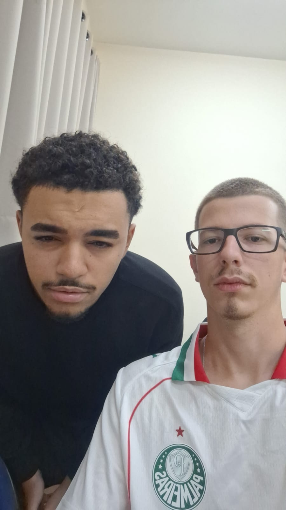

Trabalho Final — Análise e Desenvolvimento de Sistemas
A disciplina que escolhemos para apresentar é Desenvolvimento Web. Nela a gente aprendeu a criar páginas com HTML e a estilizar tudo com CSS, o que foi bem mais trabalhoso do que parecia no começo.
Aqui no site você vai encontrar um pouco sobre a disciplina, os conteúdos que a gente estudou e uma página pra entrar em contato com a gente.

Eduardo Gozzi (à direita) e
João Victor Muniz (à esquerda)
Alunos de ADS — IFSP Catanduva